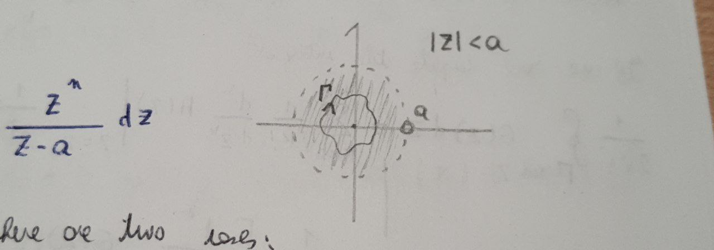

Lecture 04 - 21 September 2021¶
As a starting point, this lecture will provide some examples regarding the inversion of the z-transform:
Examples of z-transform inversion¶
The delta¶
Let’s take \(x(z)=1\); \(ROC=\mathcal{C}\):
A Rational function¶
\(X(z)=\frac{z}{z-a}\), \(ROC:\{z: |z|<a\}\)
As stated by the ROC, \(\Gamma\) must be chosen so that it DOES not encloses \(a\). 
After that there are two more subcases regarding the value of n: 1. If \(n\geq 0\): there a NO OTHER POLES and the integral is 0 2. If \(n<0\): there is a pole of order \(|n|\) in the origin. By using the lemma proved in the previous lecture and choosing \(m=-n\) we have: \begin{align*} x[n]&=\frac{1}{(m-1)!}\left[ \frac{d^{m-1}}{dz^{m-1}} \frac{z^{-m}}{z-a}z^{m} \right]{z=0} = \frac{1}{(m-1)!}\left[ \frac{d^{m-1}}{dz^{m-1}} \frac{1}{z-a} \right]{z=0} \ &= \frac{1}{(m-1)!}\left[ (m-1)! (-1)^{m-1} (z-a)^{-m} \right]_{z=0} = -a^{-m} = a^{-n} \text{ with } n<0 \end{align*}
So that the final result is, by combining the two cases, \(x[n]=-U[-n-1]a^n\).
Same rational function, different ROC¶
Let’s consider again the same rational function but with a different ROC: \(X(z)=\frac{z}{z-a}\), \(ROC:\{z: |z|>a\}\). This time there is NO WAY to avoid the pole in \(a\). Thanks to the residue theorem the contributions from the poles can be separated:
pole in a (the order is \(m=1\)):
Summing up: \(x[n]=a^{n}(1-U[-n-1]) = U[n]a^n\).
Poisson process¶
A poisson process is a process where the probability of an event in an interval \(dt\) is given by \(dP=\Gamma dt\) and no more than one event can happend in the same time interval. Let’s now define \(P(n, t)\) as the probability of having \(n\) events in an interval \([0, t]\).
If one considers a slightly bigger interval \([0, t+dt]\), still with \(n\) occurence, the two probabilities are linked via
That is the probability that in \([0, t]\) happend \(n-1\) events and the \(n-th\) event happend in the interval \([t, t+dt]\) plus the probability that \(n\) events already happened in \([0, t]\) and no new event happend in \([t, t+dt]\).
Let’s write the probability as a difference equation and consider the limit \(t\rightarrow0\):
By applying the z-transform (\(\Pi(z,t)=Z\left\{ P(n, t) \right\}\)):
where \(\Pi(z,0)\) is given by the condition that no event occurs in the point \(t=0\): \(\Pi(z,0)=Z(\delta[n])=1\) (initial condition in space).
It is now necessary to go back to the \(n-space\) from the \(z-space\). This can be done by Taylor-expanding the exponential:
Fibonacci sequence¶
The Fibonacci frequence is obtained via the following procedure:
An alaytical form can be obatined via the z-transform:
By inverting the z-transform:
Let’s now make a small detour and check wheter the formula found is actually correct:
import matplotlib.pyplot as plt
import numpy as np
def fibonacci_iterative(n:int)->set:
fibs = np.empty(n);
fibs[0] = 0;
fibs[1] = 1;
for i in range(2, n):
fibs[i] = fibs[i-1] + fibs[i-2];
return fibs;
def fibonacci_relation(n:int)->set:
fibs = np.arange(0, n, 1)
alpha = (1-np.sqrt(5))/2
beta = (1+np.sqrt(5))/2
# I should vectorize this...
for i in range(n):
fibs[i] = ( beta**(i) - alpha**(i) )/np.sqrt(5)
return fibs
n = 10 # <-- CHANGE THIS, number of points
x = np.arange(0, n, 1)
yi = fibonacci_iterative(n)
yr = fibonacci_relation(n)
fig, ax = plt.subplots(figsize=(15, 5))
plt.plot(x+0.1, yi, lw=0, marker='o', label="iterative")
ax.plot(x-0.1, yr, lw=0, marker='*', label="relation")
ax.set_xticks(x)
ax.set_yticks(yr)
ax.grid()
ax.legend()
#ax.semilogy() # <-- UNCOMMENT THIS, Log scale on y
print("Values obtained with the relation:\n", yr)
print("\nValues obtained from scratch with the iterative procedure:\n", yi)
Values obtained with the relation:
[ 0 1 1 2 3 5 8 13 21 34]
Values obtained from scratch with the iterative procedure:
[ 0. 1. 1. 2. 3. 5. 8. 13. 21. 34.]

it is possible to notice how the formula correctly reproduces the expected values and, if one sets a semilog scale on y, that i shows the reason for the exponential behaviour at high values of n. In fact, for high values of \(n\) the formula tends to be of the form
Basic properties of LTI systems in the z-space (domain)¶
a) Reality¶
That is the transfer function of a real system must have an even number of poles symetric with respect to the real axis.
Is the inverse true?
b) BIBO stability¶
Assume a BIBO stable sequence (that is \(\sum_{n} \left| x[n]\right| < \infty\)). In general it is possible to write
If one chooses \(\left.z \right| = 1\) then \(x(z) = \sum_{n} x[n] < \infty\), therefore, if a system is BIBO stable then the unitary circonference belongs to the ROC \(\Gamma_1 \in \text{ROC}\). On the other hand, if the z trasnform exits it is possible to freely insert \(\left|z\right|=1\) (that is \(z\in\Gamma_1\)) and then the system is BIBO stable, at least on \(\Gamma_1\).
Theorem
A system is BIBO stable \(\iff \Gamma_1 \in\) ROC.
c) Causality (with \(x[n]\neq \alpha \delta[n]\))¶
A system is CAUSAL if and only if \(0 \not \in \) ROC while \(\infty \subset \) ROC.
proof
\(\implies\) as \(x(z)=\sum_{n=0}^{\infty} x[n]z^{-n}\) the condition \(0\not \in \text{ROC;}\) is necessary to avoid the pole \(\left. z^{-n}\right|_{z=0}\). \(\infty\) can be seen to be in the ROC by taking the limit.
\(\impliedby\) it is possible to Laurent expand the transform
and obtain the z-transform with \(0\not \in\) ROC. Notice how in the last step the commutative property of the sum was exploited.
d) Non Causality (with \(x[n]\neq \alpha \delta[n]\))¶
A system is NON CAUSAL if and only iff \(0\in \) ROC while \(\infty \not \subset \) ROC.
proof
\(\implies x(z)=\sum_{n=-\infty}^{0} x[n]z^{-n} \implies 0\in \text{ROC;} \quad \infty \not \in \text{ROC}\).
\(\impliedby\) Taylor expand the z-transform (\(x(z)=\sum_{k=0}^{\infty} a_k z^{-k}=\sum_{n=-\infty}^{0} x_{-n}z^{-n}\)) and evaluate ROC.
e) Both causality and non causality (with \(x[n]=\alpha \delta[n]\))¶
A system is both causal and not causal if and only if ROC=\(\mathcal{C}\), that is \(0\in\)ROC and \(\infty\subset\)ROC.